The blog introduces the paper : Understanding and Simplifying Architecture Search in Spatio-Temporal Graph Neural Networks
Introduction
Existing NAS methods suffer from two issues since there is a lack of systematic architecture understanding in the STGNN community.
- hyperparameters like learning rate, channel size cannot be integrated into the NAS framework, which makes the model evaluation less accurate, potentially misleading the architecture search.
- the current search space, which basically mimics Darts-like methods, is too large for the search algorithm to find a sufficiently good candidate.
Contributions:
- We propose a disentangled framework of Spatio-Temporal Graph Neural Networks containing the designs of spatial/temporal modules, the spatio-temporal order and the skip connection.
- To allow fair and efficient evaluation of different model configurations, we study a much larger hyperparameter setting and quantify the importance of each choice, which helps to reduce significantly the hyperprameter space.
- Through comprehensive experiments and distributional analysis, we conclude fundamental design principles of the skip connection choices and the spatio-temporal order, quantified by mathematically motivated measures. The design principles from naturally cherry regions, where architectures are more likely to perform well.
- Based on our in depth understanding of architectural principles and training hypeprparameters, we propose a simple method to obtain new STGNN models more easily and effectively.
Problem Definition
$\mathcal{G}=${$\mathcal{V},\epsilon,A$}, where $|\mathcal{V}| = N$ nodes, $\epsilon$ is the edge set and $A$ is the adjacency matrix of shape $\mathbb{R} ^{N \times N}$.
The multivariate feature tensor of nodes $X \in \mathbb{R} ^{T \times N \times D}$ representing the temporal graph signals. $T$ is the total timestamps while $D$ is the number of features per node at each timestamp. Denote $X _t \in \mathbb{R} ^{N \times D}$ the features at one timestamp $t$ and $X _{t:(t+T’)} \in \mathbb{R} ^{T’ \times N \times D}$ the features of $T’$ timestamps.
In order to understand the generalizable principles of STGNN architectures in a tractable way, we propose the followed distributional bi-level formualtion:
$$min _\theta \mathbb{E} _{\alpha \sim \mathcal{P} _\theta (\alpha)}[\mathcal{L}(w ^\ast (\alpha),\alpha; D _{val})] \quad s.t. \quad w ^\ast (\alpha) = argmin _w \mathcal{L} (w,\alpha ; D _{train})$$
Since the raw architecture encoding is not compact and informative enough, we turn this task into a tractable one by proposing parameterized measures θ to map from raw architectures α to their measures θ and finally to the distributional predictive performances.
A Disentangled Framework
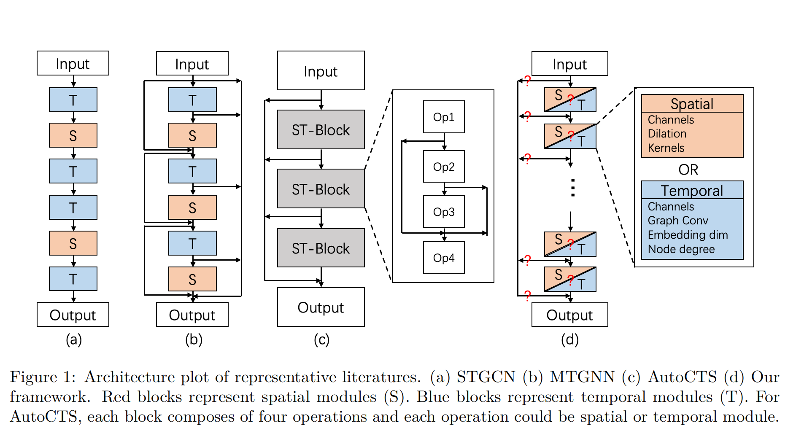
We take a step back and revisit representative works’ architectures and propose a disentangled framework as shown in Table1 and Figure1(e).
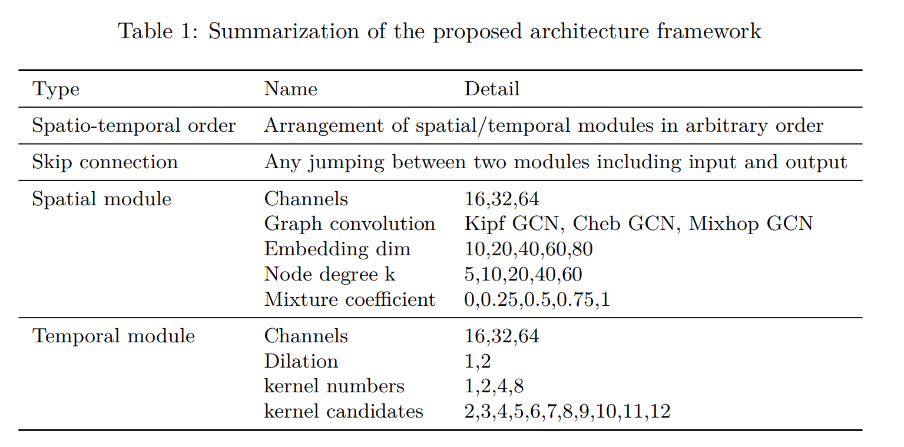
We are thus interested in the correlation between the performance and these disjoint factors:
-
Spatial-temporal order. For a pre-determined 6 modules, each of them could be either spatial or temporal module.
-
Skip connection. Consider a much larger skip connection space of over 2 million choices,i.e., each layer could choose to connect to any number of previous layers.
-
Spatial module. Consider several different GCNs that are common in Spatio-temporal GNN literature, namely Kipf GCN, Chebyshev GCN and Mixhop GCN. On graph structure, we adopt the setting of AGCRN but with additional kNN for sparsity.
-
Temporal module. We only consider TCN here since it is easier to be trained than RNN. We consider a typical dilated TCN on the time axis of features to extract temporal features.
Understanding STGNN Hyperparameters and Architectures
In this section, we show how important principles can be observed based on the framework, which help speedup the evaluation and subsequently design better STGNNs. We explain for each factor its motivation, the used methodology and the understanding obtained to answer sequentially the research questions.
Understanding training hyperparameters
In this section, we show how important principles can be observed based on the framework, which help speedup the evaluation and subsequently design better STGNNs. We explain for each factor its motivation, the used methodology and the understanding obtained to answer sequentially the research questions.
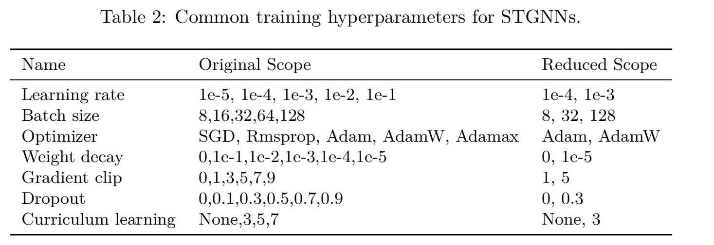
The current training hyperparameters constitute a space of over $10 ^5$ choices and is not practical to efficiently evaluate each model configuration. We aim to independently study the impact by the ranking distribution to remove the hyperparameters that are commonly bad for most architectures. The ranking distribution evaluates a model with different hyperparameters to obtain a relative rank and repeats to have distributional patterns.
The ranking strategy.
- To compare hyperparameter P of K choices (p1*, p2, . . . , p**K*), we randomly sample a configuration under our framework. A configuration contains all necessary choices of hyperparameters and architectures to identify a model.
- We then replace iteratively the hyperparameter P of this configuration by all K choices and train the models one by one. Thus, for each batch of K runs, we have K model results whose configurations differ from each other only in the hyperparameter P.
- We rank these results ascendingly (smaller error metric means better performance, thus ranks better). We run multiple batches of K runs and obtain the ranking distribution on each hyperparameter.
The hyperparameters are grouped into three cases:
- reduced options, e.g., learning rate and optimizer can be reduced to a few options.
- monotonically related,e.g., weight decay and dropout rate are (almost) showing a monotonically better as weight decay decreases.
- no obvious pattern,e.g.,gradient clip dose not show much difference as long as it is activated and same for batch size and curriculum learning.
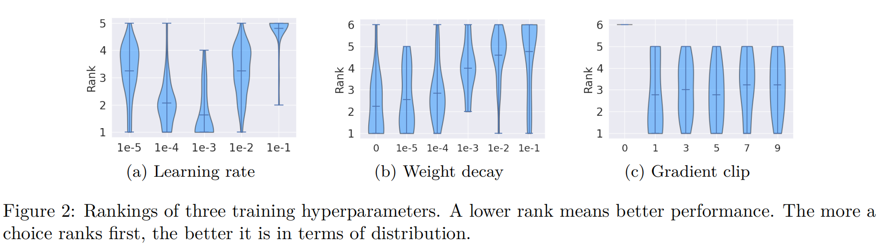
Understanding architectures
Take account of the following 4 questions to understand the influence of each factor:
- What patterns in terms of spatio-temporal order do good models share? How to characterize spatio-temporal order patterns?
- What patterns in terms of skip connection do good models share? How to characterize skip connection patterns?
- How do different spatial/temporal module designs influence the performance?
- How transferable are above patterns in the architecture space?
Spatio-temporal order
We propose two measures explained below to characterize spatio-temporal order of an architecture:
- Number of spatial or temporal modules. Without loss of generality, we observe temporal modules, noted as #T
- Number of inversed order of a module sequences. Let the number of inversed order of a pair of modules (either S or T) be 1 if T comes before S, i.e. TS, and 0 otherwise, i.e. ST, SS, TT. The number of inversed order of a module sequence is defined as the sum of that of each pair modules.
The rationale of the above two measures is quantitatively justified in below Remark 1. Specifically, they help us identify a compact triangle region as in Figure 3(a) where different combinatorial choices of S/T orders lie at the corners.
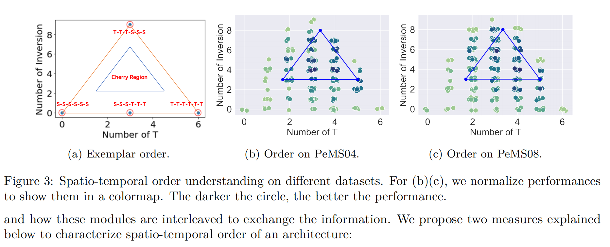
Remark 1. We claim that the number of inversed order along with the number of T modules (#T), can well capture the interleaving of a sequence of S-T modules, including the following 4 corner cases: (N is number of total modules)
- Case 1: All S modules, #T is 0 and number of inversed order is 0, indicating no temporal feature is needed;
- Case 2: All T modules, #T is N and number of inversed order is 0, indicating no spatial feature is needed;
- Case 3: $\frac{N}{2}$ S modules followed by $\frac{N}{2}$ T modules, #T is $\frac{N}{2}$ and number of inversed order is 0, indicating the spatial information should strictly be processed before temporal information;
- Case 4: $\frac{N}{2}$ T modules followed by $\frac{N}{2}$ S modules, #T is $\frac{N}{2}$ and number of inversed order is $\frac{N ^2}{2}$, indicating the temporal information should strictly be processed before spatial information.
This suggests that
- we might have good performance for many temporal modules but too many spatial modules is not a good idea. This could be because of the oversmoothing phenomenon observed in GNN.
- a large number of inversion usually returns better performance which means that both modules are encouraged to interleave more frequently.
Skip connection
As the representation flows from the input to the output without a loop, we are motivated to formulate skip connections in STGNNs as a Directed Acyclic Graph (DAG) with a straight though flow path connecting sequentially each module. Afterwards, we need to consider proper measures to observe the skip space as it is large. Intuitively, the performance of a certain skip pattern depends on how many we skip and where we skip. The former can be measured by number of paths from input module to output module and the latter can be measured by average shortest length for each pair of modules, both defined below. We propose another two measures explained below to characterize skip connection of an architecture:
- Number of path, noted as (#Path). It is defined as the total number of trajectories from the predetermined input node to the predetermined output node.
- Average Shortest Length, noted as ASL. It is defined as the average of shortest lengths from non-output nodes to the output node predetermined.
The rationale of the above two measures is quantitatively justified in below Remark 2. Specifically, they help us identify a compact right triangle region as in Figure 4(a) where different combinatorial choices of skip connections lie at the corners.
Remark 2. We claim that Average Shortest Length (ASL) and number of path(#Path) in a Directed Acyclic Graph can well capture the spatio-temporal information flow, including the following 3 corner cases:
- Case 1: ASL is low and #Path is low, i.e., limited number of skips which mostly connects to the output node, where most literature falls in;
- Case 2: ASL is low and #Path is high, i.e., a lot of skip connections among which many skips to the output node, potentially obfuscating the propagated message;
- Case 3: ASL is high and #Path is low, i.e., almost no additional skips, which is the case of earliest STGCN model
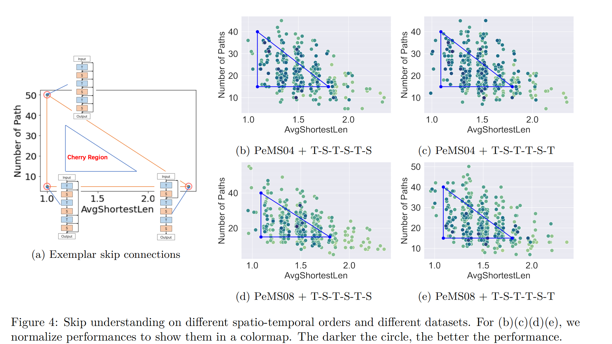
Spatial/Temporal module design
Different choices of spatial/temporal module influence the way the spatial/temporal representation are processed. In the literature, diverse modifications on TCN and GCN have been proposed. We use the same ranking distribution as in understanding training hyperparameters to study all the module choices. The ranking plots are partially shown in Figure 5 and full plot is given in Appendix D. We remove a few bad options according to the ranking, e.g., Cheb GCN, node degree 5, etc. Then, we also find we could largely reduce number of parameters by reducing channels temporarily due to a high performance correlation, as show in Appendix D.
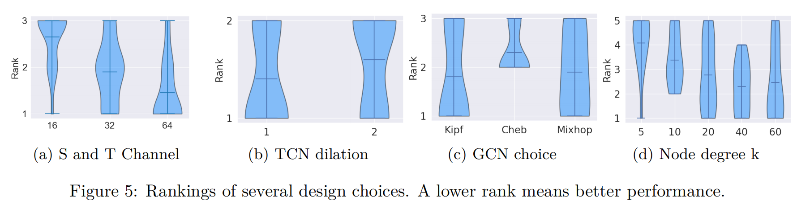
Searching Better STGNN Models in a Simplified Way
A simplified but strong NAS baseline
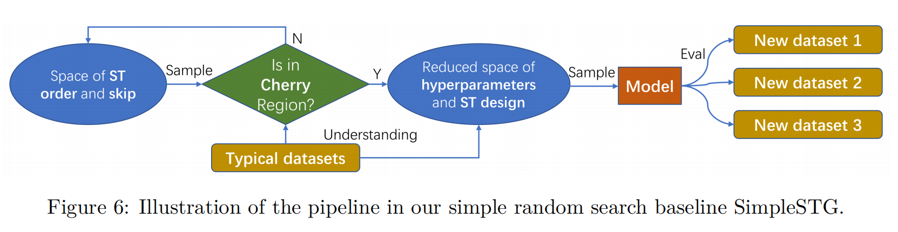
We use random search with the cherry regions found by understanding results on typical datasets. Specifically, we evaluate a random sample if it lies in regions, otherwise reject it and re-sample. Note that more complex search strategies leveraging our understanding surely exists and probably will be more efficient than our simple baseline, e.g. Evolutionary, Bayesian or even differentiable. But our goal is to demonstrate how to utilize our understanding and how effective it could be to design architectures with better understandings. We stick to this baseline for further comparison.
Overall performance
In this part, we compare more thoroughly our models with related works. From Table 3, incoporating architecture priors, the proposed simple baseline could find novel STGNN models better than hand-designed and NAS-based methods. The other baselines are introduced as follows. Vector Auto-Regression (VAR) is a baseline often for sanity check.
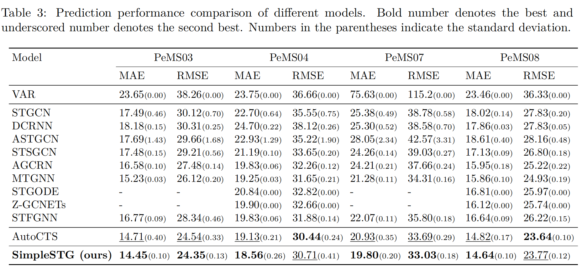
The generalizability of the distilled principles is demonstrated in two ways. First, in Section 4, we show at the same time empirical results on two datasets and similar principles are observed. Second, in Table 3, note that we search only one model and evaluate this model on more datasets covering different regions of California (Appx B) instead of searching the best model per dataset as in other NAS methods.
Search efficiency and effectiveness of space
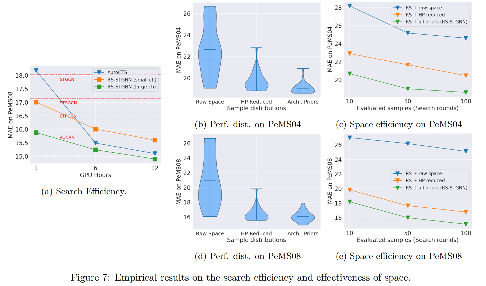
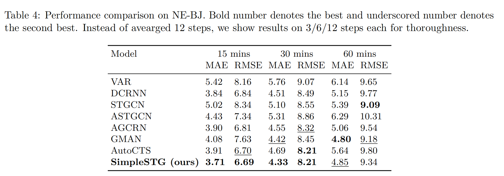
The paper
If you like this blog or find it useful for you, you are welcome to comment on it. You are also welcome to share this blog, so that more people can participate in it. If the images used in the blog infringe your copyright, please contact the author to delete them. Thank you !